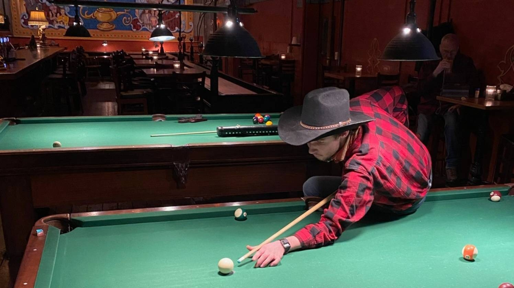

About
With the Big Boy locomotive in Fort Worth, Texas
Who are you?
I'm Kyle Metscher, a student of Computer Science at Western Governors University and a service technician at Baker Road Automotive in Stevenson, Washington. More casually, I study linguistics, music, history, and art.
What is this website for?
This site primarily serves as a blog where I will post about vehicles I work on at the shop, mostly in a lessons-learned repair guide format. I will also post music and movie reviews, and updates about my personal projects, including work I do on the site itself. My intent is for it to become a living portfolio for colleagues, prospective employers, and those interested in collaborating to see what I'm up to.
How does this site work?
I wrote and styled this site in HTML and CSS as a form of study for a web development course at Western Governors University. The site runs on an Apache installation on an AWS EC2 instance with a backend I wrote in PHP and mySQL. It is a perennial work in progress.
On the home page, the ten most recent posts appear as previews in publishing order. On the right-hand side of the page, a list of tags used to file posts under are in a scrollable list. As time goes on, posts made in a given month will appear under their respective entries in the archives. You can also filter posts by language.
Billiards at McMenamin's Backstage Bar in Portland, Oregon
What credentials do you hold?
I graduated with an Associate of Arts in general studies from Clark College in Vancouver, Washington, where I enrolled at 16 years old and received my degree at 18 as part of Washington State's "Running Start" program. I am a small motors technician. I am actively pursuing my Project+ and ITIL Foundation certifications.
What work experience do you have?
I have been a copy editor and writer, translator, conference volunteer, traveling salesman, fry cook, business owner, internet marketer, front-end web designer, warehouse and airport freight handler, barista, automotive technician, and delivery boy. References are available upon request.
What programming languages do you have experience with?
C/C++, PHP, Python, Rust, Ruby, Lua, JavaScript, and for a more liberal definition, HTML and CSS. The list is certain to grow.
A budai vár és a lánchíd éjszakán, Budapest, Magyarország
Beszél magyarul?
Igen! Budapesten éltem két évet. Sajnos nem olyan szépen beszélek mint igazi magyar, de kiprobálom mindenesetre.
Van-e kedve, Magyarországra visszajönni?
Természetesen igen. Ha Önnek van valamilyen információja vagy munkája nekem, kérlek, nézz a kapcsolati oldalt.